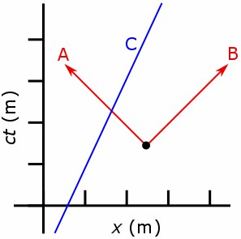

Пространство-время
(простра́нственно-временно́й конти́нуум) — физическая модель, дополняющая пространство равноправным[1] временны́м измерением и таким образом создающая теоретико-физическую конструкцию, которая называется пространственно-временным континуумом. Пространство-время непрерывно и с математической точки зрения представляет собой многообразие с лоренцевой метрикой.
В нерелятивистской классической механике использование Евклидова пространства, не зависящего от одномерного времени, вместо пространства-времени уместно, так как время рассматривается как всеобщее и неизменное, будучи независимым от состояния движения наблюдателя. В случае релятивистских моделей время не может быть отделено от трёх измерений пространства, потому что наблюдаемая скорость, с которой течёт время для объекта, зависит от его скорости относительно наблюдателя, а также от силы гравитационного поля, которое может замедлить течение времени.
В космологии и релятивистской физике вообще концепция пространства-времени объединяет пространство и время в одну абстрактную Вселенную. Математически она является многообразием, состоящим из «событий», описанных системой координат. Обычно требуется три пространственных измерения (длина, ширина, высота) и одно временное измерение (время). Измерения — независимые составляющие координатной сетки, необходимые для локализации точки в некотором ограниченном «пространстве». Например, на Земле широта и долгота — две независимые координаты, которые вместе однозначно определяют положение. В пространстве-времени координатная сетка, которая простирается в 3+1 измерениях, локализует события (вместо просто точки в пространстве), то есть время добавляется как ещё одно измерение в координатной сетке. Таким образом, координаты определяют где и когда происходят события. Однако единая природа пространства-времени и его независимость от выбора координат позволяют предположить, что чтобы выразить временную координату в одной системе координат, необходимы как временная, так и пространственная координаты в другой системе координат. В отличие от обычных пространственных координат, в пространстве-времени возникает понятие светового конуса, накладывающее ограничения на допустимые координаты, если одна из них везде должна быть временной. Эти ограничения жёстко связаны с особой математической моделью, которая отличается от евклидова пространства с его очевидной симметрией.
В соответствии с теорией относительности, Вселенная имеет три пространственных измерения и одно временное измерение, и все четыре измерения органически связаны в единое целое, являясь почти равноправными и в определённых рамках (см. примечания ниже) способными переходить друг в друга при смене наблюдателем системы отсчёта.
В рамках общей теории относительности пространство-время имеет и единую динамическую природу, а его взаимодействие со всеми остальными физическими объектами (телами, полями) и есть гравитация. Таким образом, теория гравитации в рамках ОТО и других метрических теорий гравитации есть теория пространства-времени, полагаемого не плоским, а способным динамически менять свою кривизну.
До начала двадцатого века время полагалось независимым от состояния движения, протекающим с постоянной скоростью во всех системах отсчёта; однако затем эксперименты показали, что время замедляется при больших скоростях одной системы отсчёта относительно другой. Это замедление, названное релятивистским замедлением времени, объясняется в специальной теории относительности. Замедление времени подтвердили многие эксперименты, такие как релятивистское замедление распада мюонов в потоке космических лучей и замедление атомных часов на борту космического челнока, ракеты и самолётов относительно установленных на Земле часов. Длительность времени поэтому может меняться в зависимости от событий и системы отсчёта.
Термин пространство-время получил широкое распространение далеко за пределами трактовки пространства-времени с нормальными 3+1 измерениями. Это действительно соединение пространства и времени. Другие предложенные теории пространства-времени включают дополнительные измерения, обычно пространственные, но существуют некоторые умозрительные теории, включающие дополнительные временные измерения, и даже такие, которые включают измерения, не являющиеся ни временными, ни пространственными (например, суперпространство)[2]. Вопрос о том, сколько измерений необходимо для описания Вселенной, открыт до сих пор. Умозрительные теории, такие как теория струн, предсказывают 10 или 26 измерений (с М-теорией, предсказывающей 11 измерений: 10 пространственных и 1 временное), но существование более четырёх измерений имело бы значение только на субатомном уровне.
Введение
Нерелятивистская классическая механика рассматривает время как универсальную величину измерения, которая является однородной во всем пространстве и которая отделена от пространства. Классическая механика предполагает, что время имеет постоянную скорость течения, которая не зависит от состояния движения наблюдателя (англ.)рус. или чего-либо внешнего.[3]
В контексте специальной теории относительности время не может быть отделено от трёх измерений пространства, поскольку наблюдаемая скорость течения времени объекта зависит от скорости объекта относительно наблюдателя. Общая теория относительности, кроме того, даёт объяснение того, как гравитационные поля могут замедлять течение времени для объекта, наблюдаемого за пределами этого поля.
В обычном пространстве позиция определяется тремя числами, известными как размерность. В декартовой системе координат они называются x, y и z. Позиция в пространстве-времени называется событием, и требует указания четырёх чисел: трёхмерное местоположение в пространстве, а также положение во времени (рис. 1). Таким образом, пространство-время четырёхмерное. Событие — то, что происходит в определённое мгновение в одной точке пространства-времени, представленной набором координат: x, y, z и t.
Слово «событие», используемое в теории относительности, не следует путать с использованием слова «событие» в обычном разговоре, где оно может означать нечто вроде концерта, спортивного события или сражения. Это не математические «события» в том смысле, в котором это слово используется в теории относительности, потому что они имеют конечную и ненулевую длительность. В отличие от таких событий как фейерверки или молнии, математические события имеют нулевую продолжительность и представляют собой единственную точку пространства-времени.
Путь частицы через пространство-время можно рассматривать как последовательность событий. Ряд событий можно связать вместе, чтобы сформировать линию, которая представляет движение этой частицы в пространстве-времени. Эта линия называется мировой линией частицы.[4] : 105
Математически пространство-время является многообразием, то есть локально «плоским» рядом с каждой точкой так же, как при достаточно малых масштабах глобус кажется плоским.[5] Очень большой масштабный коэффициент c (обычно называемый скоростью света) соотносит расстояния, измеренные в пространстве, с расстояниями, измеренными во времени. Величина этого масштабного коэффициента (почти 300 000 км в пространстве, что эквивалентно 1 секунде во времени), а также тот факт, что пространство-время является многообразием, означает, что при обычных, нерелятивистских скоростях и на обычных расстояниях на человеческом уровне мало кто может заметить отличия от евклидового пространства. Только с появлением высокоточных научных измерений в середине XIX века, таких как эксперимент опыт Физо и эксперимент Майкельсона, возникли загадочные расхождения между наблюдениями и прогнозами на основе неявного предположения о евклидовом пространстве.[6]
В специальной теории относительности термин «наблюдатель», в большинстве случаев, означает систему отсчёта, в которой производятся измерения объектов или событий. Это использование значительно отличается от обычного значения термина. Системы отсчёта являются нелокальными конструкциями, и в соответствии с таким использованием термина не имеет смысла говорить о том, что наблюдатель имеет какое-либо положение. На рис. 1-1 представьте, что рассматриваемая система отсчёта оснащена плотной решёткой часов, синхронизированной в этой системе отсчёта, которая неограниченно продолжается на протяжении трёх измерений пространства. Любое конкретное место решётки не имеет значения. Часовая решётка часов используется для определения времени и положения событий, происходящих во всей системе отсчёта. Термин наблюдатель относится ко всему набору часов, связанным с одной инерциальной системой отсчёта.[7]: 17-22 В этом идеализированном случае каждая точка пространства имеет связанные с ней часы, и поэтому часы регистрируют каждое событие мгновенно, без задержки между событием и его записью. Однако реальный наблюдатель увидит задержку между испусканием сигнала и его обнаружением из-за конечности скорости света. При синхронизации часов учитывается время распространения сигнала и часы корректируются на величину времени его распространения.
Во многих книгах по специальной теории относительности, особенно более старых, слово «наблюдатель» используется в более обычном понимании. Обычно смысл термина ясен из контекста.
Физики различают понятия измерять и наблюдать (после установления задержки распространения сигнала) от того, что визуально видно без таких корректировок. Ошибки в понимании отличий того, что измеряется/наблюдается от того, что видится, является источником многих ошибок среди начинающих изучение теории относительности.[8]
Пространство-время в специальной теории относительности
Интервал
В трёх измерениях расстояние Δ d между двумя точками может быть определено с использованием теоремы Пифагора:
( Δ d ) 2 = ( Δ x ) 2 + ( Δ y ) 2 + ( Δ z ) 2
Хотя два наблюдателя могут измерять положение x, y и z двух точек, используя разные системы координат, расстояние между точками будет для обоих одинаковым (при условии, что они измеряют с использованием тех же единиц). Расстояние таким образом «инвариант».
Однако в специальной теории относительности расстояние между двумя точками больше не сохраняется при измерении двумя разными наблюдателями из-за сокращения Лоренца, если один из наблюдателей движется. Ситуация ещё больше осложняется, если две точки разделены и расстоянием и временем. Например, если один наблюдатель видит, что два события происходят в одном и том же месте, но в разное время, наблюдатель, движущийся относительно первого, увидит два события, происходящие в разных местах. Таким образом, для измерения эффективного «расстояния» между двумя событиями придётся использовать другой способ измерения.
В четырёхмерном пространстве-времени аналогом расстояния является «интервал». Хотя время входит в четвёртое измерение, оно трактуется иначе, чем пространственные измерения и поэтому пространство Минковского существенно отличается от четырёхмерного евклидова пространства. Основная причина слияния пространства и времени в пространство-время состоит в том, что пространство и время не являются инвариантными, то есть в соответствующих условиях разные наблюдатели будут не согласны относительно промежутка времени (из-за замедления времени) или расстояния (из-за лоренцева сокращения длины) между двумя событиями. Но специальная теория относительности обеспечивает новый инвариант, называемый интервалом пространства-времени, который объединяет расстояния в пространстве и во времени. Все наблюдатели, которые измеряют время и расстояние, получат один и тот же интервал пространства-времени между любыми двумя событиями. Предположим, что наблюдатель измеряет два события, разделённые во времени на Δ t и в пространстве на Δ x . Тогда интервал пространства-времени ( Δ s ) 2 между двумя событиями, разделёнными расстоянием Δ x в пространстве и Δ ct = c Δ t в c t -координате:
( Δ s ) 2 = ( Δ c t ) 2 − ( Δ x ) 2 , или для трёх пространственных измерений, (Δs ) 2 =( Δct) 2 − (Δx)2 − (Δ y) 2 − (Δ z)2
Постоянная c , скорость света, преобразует единицы измерения времени (в секундах) в единицы измерения расстояниz
(в метры).
Примечание по обозначениям: Хотя для краткости часто встречаются интервальные выражения, выраженные без дельт, включая большинство следующих обсуждений, следует понимать, что в общем случае x означает Δx и т. д. Нам всегда интересны «изменения» пространственных или временных значений координат, относящихся к двум событиям, и, поскольку нет выделенного начала системы отсчёта, конкретные значения координат не имеют существенного значения.
Рисунок 2-1. Диаграмма пространства-времени, иллюстрирующая два фотона, A и B, возникающие в одном и том же событии, и объект С с досветовой скоростью. 
Уравнение выше похоже на теорему Пифагора, за исключением знака минус между выражениями (Δct)2 и ( Δx)2 Заметим также, что интервал пространства-времени представляет собой величину s2 , а не s. Причина в том, что в отличие от расстояний в евклидовой геометрии интервалы в пространстве-времени Минковского могут быть отрицательными. Вместо того, чтобы иметь дело с квадратными корнями из отрицательных чисел, физики обычно рассматривают s2 как отдельный символ сам по себе, а не квадрат величины.
Из-за знака минус интервал пространства-времени между двумя отдельными событиями может быть равен нулю. Если s2 является положительным, интервал пространства-времени является времениподобным, что означает, что два события разделяются больше временем, чем пространством. Если s2 отрицательный, интервал пространства-времени является пространственно-подобным, что означает, что два события разделены больше пространством, чем временем. Пространственно-временные интервалы равны нулю, когда x = ± ct. Другими словами, интервал чего-то движущегося со скоростью света между двумя событиями на мировой линии равен нулю. Такой интервал называется светоподобным или нулевым. Фотон, попавший в наш глаз от далёкой звезды, не имеет возраста, несмотря на то, что (с нашей точки зрения) провёл годы в пути.
Диаграмма пространства-времени обычно рисуется только с одной пространственной и одной временной осью. На рис. 2-1 представлена пространственно-временная диаграмма, иллюстрирующая мировые линии (то есть пути в пространстве-времени) двух фотонов A и B, вышедших из одного и того же события и идущих в противоположных направлениях. Кроме того, C иллюстрирует мировую линию объекта с досветовой скоростью. Вертикальная координата времени имеет масштаб c , так что она имеет те же единицы (метры), что и пространственная ось. Поскольку фотоны движутся со скоростью света, их мировые линии имеют наклон ± 1. Другими словами, каждый метр, который фотон перемещается влево или вправо, требует приблизительно 3,3 наносекунды времени.
Примечание по обозначениям: В литературе по теории относительности есть две формы записи:
s 2 = ( c t ) 2 − x 2 − y 2 − z 2 и s2 = (ct)2 + x2 + y2 + z2
Эти формы записи связаны с сигнатурой метрики (+ − − −) и (− + + +). Отличие состоит в расположении координаты времени. Обе формы широко используются в научном поле.
Система отсчёта
При сравнении измерений, выполненных движущимися относительно друг друга наблюдателями в разных инерциальных системах отсчёта, полезно работать с системами отсчёта в стандартной конфигурации. На рис.2-2 показаны две движущиеся относительно друг друга галлиеевы системы отсчёта (то есть обычные трёхмерные пространственные системы отсчёта). Система S принадлежит первому наблюдателю O, а система S' принадлежит второму наблюдателю O'.
Рис. 2‑3a представляет собой повёрнутый в другом направлении рис. 2‑2. Рис. 2‑3b иллюстрирует диаграмму пространства-времени с точки зрения наблюдателя О. Поскольку S и S' находятся в стандартной конфигурации, их начала отсчёта совпадают в момент t = 0 в системе S и t′ = 0 в системе S'. Ось ct 'проходит через события в системе S', которые имеют x′ = 0. Но точки с x′ = 0 движутся в направлении x системы S со скоростью v, так что они не совпадают с осью ct в любое отличное от нуля время. Поэтому ось ct' наклоняется относительно оси ct на угол θ, заданный формулой
tan θ = v / c .
Ось x' также наклоняется относительно оси x. Чтобы определить угол этого наклона, напомним, что наклон мировой линии светового импульса всегда ±1. Рис. 2‑3c представляет собой диаграмму пространства-времени с точки зрения наблюдателя O'. Событие P представляет собой излучение светового импульса при x′ = 0, ct′ = −a. Импульс отражается от зеркала, расположенного на расстоянии a от источника света (событие Q), и возвращается к источнику света в x′ = 0, ct′ = a (событие R).
Те же события P, Q, R нарисованы на рис. 2‑3b в системе наблюдателя O. Пути света имеют наклоны = 1 и −1 так что △PQR образует прямоугольный треугольник. Так как OP = OQ = OR, угол между x' и x должен быть также θ.
В то время как покоящаяся система отсчёта имеет пространственные и временные оси, которые пересекаются под прямым углом, движущаяся система отсчёта имеет острый угол между осями. Но фактически системы отсчёта эквивалентны. Асимметрия рисунка обусловлена неизбежными искажениями того, как координаты пространства-времени отображаться на прямоугольную систему координат, и это следует считать не более странным, чем то, как на земной проекция Меркатора относительные размеры площади поверхности вблизи полюсов (Гренландия и Антарктида) сильно больше относительно площади поверхности вблизи экватора.